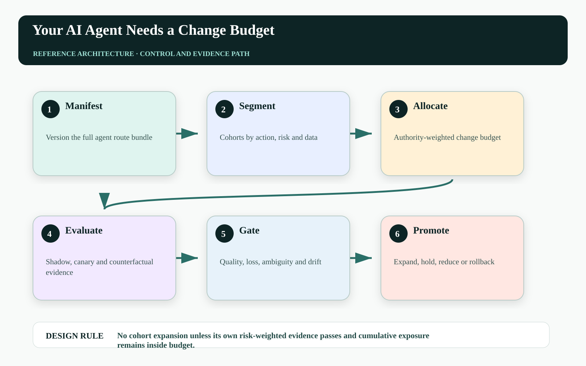
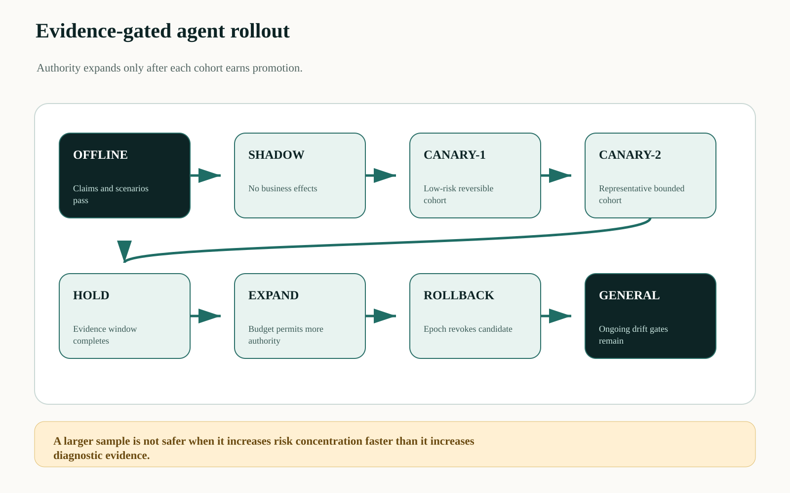
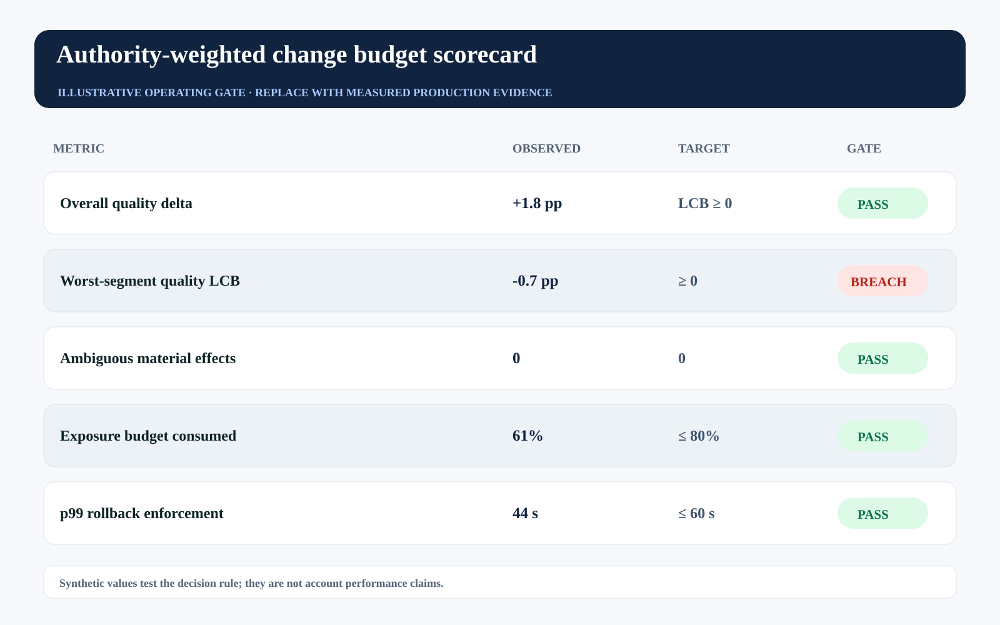

This is an editorial draft developed with AI writing and visualization assistance for human technical review before Medium publication. All incidents, thresholds, workloads, and operating values are illustrative unless a source is explicitly cited.
A 1% agent canary sounds conservative until that 1% contains the largest customers, the broadest permissions, or the only irreversible actions in the workflow. Traffic percentage is a software deployment measure; authority-weighted exposure is the production safety measure.
Every change—model, prompt, retrieval policy, tool adapter, authorization rule, verifier, or workflow graph—consumes a finite change budget. The control plane should allocate that budget across cohorts, action classes, and time while evidence accumulates.
Roll out agent capability in units of reachable consequence, and spend the budget only where counterfactual evidence can detect harm.

Request-count canaries misprice heterogeneous risk#
Two actions can consume one request each while differing by six orders of magnitude in exposure. A summary draft and a binding commercial amendment should not contribute equally to canary size. Nor should a low-risk test population justify a high-risk rollout whose data and authority distribution is different.
Agent changes also interact. A stronger model paired with a stale verifier or broader retrieval scope may increase effective authority even if each component passed in isolation. The release unit must name the full route bundle and the policies it depends on.
Create an authority-weighted release controller#
A change manifest identifies model, prompts, tools, schemas, policies, verification, and recovery versions. A cohort planner samples by risk tier and action class. The budget service computes cumulative exposure. Shadow and counterfactual evaluators compare candidate and control before effect authority expands.
At runtime, a gate tracks outcome quality, policy violations, ambiguous effects, tail loss, latency, cost, and distribution shift. It can hold, reduce, or roll back the cohort. Rollback advances an epoch so already-issued authority does not survive the release decision.

Define canary size as exposure#
Let every action contribute an authority-weighted exposure unit:
Exposure(C) = Σ_{a∈C} value(a) × irreversibility(a) × scope(a) × uncertainty(a)
Budget_remaining = B_period - Σ Exposure(changes)
promote iff ΔQuality_LCB ≥ 0 ∧ ΔLoss_UCB ≤ L_max ∧ Exposure(next) ≤ Budget_remainingLCB and UCB denote conservative confidence bounds. The equation prevents promotion on an attractive average when uncertainty around quality or loss still crosses the operating limit.
| Release dimension | Evidence | Promotion blocker |
|---|---|---|
| Capability | Scenario and mutation tests | Critical invariant failure |
| Cohort | Representative risk distribution | Coverage gap |
| Effect | Independent postconditions | Ambiguity or duplicate |
| Economics | Cost and conditional loss | Tail budget breach |
| Control | Rollback and epoch proof | Stale authority accepted |
Version the entire change surface#
The release manifest should make hidden coupling inspectable:
release: agent-route-2026.09.03-rc2
model: route-bundle-17
prompt: planner-42
retrieval_policy: evidence-11
tool_contracts: crm-v8
policy_bundle: pricing-2026.09.3
verifier: quote-assertions-v6
recovery: compensation-v4
cohort:
risk_tiers: [low, moderate]
exposure_budget_units: 250
rollback:
advance_epoch: trueAny material component change creates a new manifest. This makes causal analysis possible when performance moves and prevents a prompt rollback from leaving a changed policy or adapter in place.
Track budget burn and evidence quality#
Monitor exposure consumed, evidence earned per exposure unit, cohort representativeness, worst-segment quality, ambiguity, conditional tail loss, rollback time, and stale-authority rejection. The best rollout maximizes learning per unit of consequence, not raw traffic.
The synthetic gate shows overall quality passing while the worst-segment lower bound breaches. Global averages must not authorize expansion over an underserved or high-risk cohort.

| Operating signal | Decision use | Failure interpretation |
|---|---|---|
| Exposure budget burn | Hold competing changes | Too much consequence changed at once |
| Evidence per exposure | Redesign cohort | Canary is risky but uninformative |
| Worst-segment bound | Block expansion | Average hides localized harm |
| Rollback enforcement | Contain on breach | Candidate authority persists after decision |
Failure-injection before production#
A design review cannot prove No cohort expansion unless its own risk-weighted evidence passes and cumulative exposure remains inside budget. The pre-production harness must interrupt the system at the transitions where ownership, authority, evidence, and business state can disagree. The objective is not to maximize a generic pass rate. It is to demonstrate that every material fault produces a bounded state, a named owner, and an admissible recovery transition.
| Injected fault | Experiment | Required evidence |
|---|---|---|
| Delayed or reordered work | Pause the path after SHADOW and release it after HOLD | The stale path cannot manufacture terminal success |
| Authority becomes stale | Advance policy, mode, ownership, or resource version before effect commit | The final gateway rejects the old decision context |
| Evidence is missing or corrupted | Remove one authoritative observation or change its digest | The outcome remains violated, inconclusive, or owned—never guessed |
| Recovery itself fails | Interrupt compensation, handoff, or receipt closure | The action stays visible with an owner, deadline, and next legal transition |
Run the matrix at concurrency, with realistic dependency lag and with the same policy and gateway versions used in the candidate release. Report p95 and p99 resolution alongside the worst unresolved example. Averages can demonstrate throughput; they cannot erase a single material breach. Promotion should require replayable evidence for the controls, not a slide stating that the team considered the risk.
Three questions for the architecture review#
Where is truth decided? Name the authoritative source and the exact component permitted to advance the workflow into a terminal state. If the answer is ‘the agent interprets the tool response,’ the boundary is not yet independent.
Where is authority finally enforced? Follow the command through every queue, adapter, cache, provider, and downstream effect. A policy decision is useful only when the last material write boundary can reject a stale, changed, or excessive action.
What blocks promotion? Convert the scorecard into executable gates with owners and expiry. A breached tail metric must reduce scope, hold the cohort, or enter an approved exception path; it cannot remain decorative telemetry.
A practical implementation sequence#
1. Build manifests for current releases. Capture every component that can change agent behavior or authority.
2. Define exposure units. Start ordinal if needed, but include value, reversibility, scope, and uncertainty.
3. Run cohort-specific gates. Promote only when representative segments pass conservative outcome and rollback evidence.
Primary references and boundaries#
Google SRE defines canarying as a partial, time-limited deployment evaluated against a control, and describes gradual rollout with verification in reliable product launches. Authority-weighted exposure is an agent-specific extension.
Exposure units need not claim exact monetary truth. An ordinal, documented model can still be superior to raw request percentage if it reliably distinguishes reversible internal work from concentrated material authority.
The operating conclusion#
The right question is not ‘what percentage of traffic has the new agent?’ It is ‘how much consequential authority has changed, what evidence has that exposure bought, and can we revoke it before the loss budget is exhausted?’
Would your current 1% canary still look small after weighting the actions by value, reversibility, and permission scope?